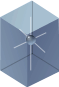
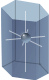
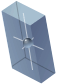
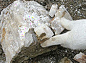
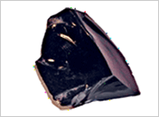
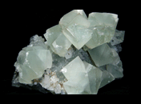

생성원리

결정형
광물의 결정은 구성원소들이 3차원적으로 배열된 내부적 규칙성이 외부에 보여지는 다면체 형태로 나타나며, 각 광물결정의 기하학적 대칭도에 따라 크게 6개의 정계로 분류됩니다.
| 결정계 | 등축정계 | 정방정계 | 육방정계 | 사방정계 | 단사정계 | 삼사정계 |
|---|---|---|---|---|---|---|
| 결정계의 요소 | x=y=z α=β=γ=90˚ |
x=y≠z α=β=γ=90˚ |
x1=x2=x3 x⊥z, θ=60˚ |
x≠y≠z α=β=γ=90˚ |
x≠y≠z α=γ=90˚,β≠90˚ |
x≠y≠z α≠β≠γ≠90˚ |
| 간단한 결정형 |  |  |  | |||
| 광물 예 | 금강석, 형석, 암염 |
지르콘,황동석, 회중석 |
석영, 방해석, 흑연 |
자연황,황옥, 감람석 |
정장석,보통휘석, 석고 |
사장석,남정석, 규회석 |
색과 조흔색
자연광하에서 광물의 색은 판별에 있어 명백하고도 매우 유용한 특성이며, 육안으로 구분이 가능합니다.
조흔색은 광물을 조흔판에 긁어서 나타나는 고유의 색으로 동일한 색을 지닌 광물들을 구분할 때 활용됩니다.
| 광물 | 화학식 | 표면색 | 조흔색 | 광물 | 화학식 | 표면색 | 조흔색 |
|---|---|---|---|---|---|---|---|
| 금 | Au | 황색 | 황색 | 적철석 | Fe2O3 | 흑색 | 적색 |
| 황철석 | FeS2 | 황색 | 흑색 | 자철석 | Fe3O4 | 흑색 | 흑색 |
| 황동석 | CuFeS2 | 황색 | 녹흑색 | 갈철석 | Fe2O3·nH2O | 흑색 | 황갈색 |
경도(굳기)
경도는 광물의 단단한 정도로서 각 경도의 대표적 광물을 표본광물에 긁어 나타나는 긁힘의 정도로 측정하는 상대경도와 표본광물을 다이아몬드침으로 눌러 나타나는 변형의 정도로 측정하는 절대경도(누프경도)로 나눌 수 있습니다.
아래 표는 모스가 정한 Mohs’ 경도계로 상대적 굳기에 따라 경도 및 해당 대표광물을 10단계로 구분하여 정한 것입니다.
| 굳기 | 1 | 2 | 3 | 4 | 5 | 6 | 7 | 8 | 9 | 10 |
|---|---|---|---|---|---|---|---|---|---|---|
| 광물 | 활 석 | 석 고 | 방해석 | 형 석 | 인회석 | 정장석 | 석 영 | 황 옥 | 강 옥 | 금강석 |
쪼개짐과 깨짐
- 
-
- 쪼개짐
광물에 타격을 가했을 때 약한 면을 따라 일정한 방향으로 쪼개지는 성질이며, 이렇게 평탄하게 쪼개진 면을 벽개면이라 합니다.
- 
-
- 깨짐
광물에 타격을 가했을 때 방향성이 없고 불평탄한 단구면으로 깨지는 성질을 말합니다.
광택, 비중, 자성, 방사성
- 
형석의 유리광택
-
- 광택
광물 표면에서 반사된 빛에 대한 눈의 느낌으로, 광물표면의 성질과 흡수되는 빛의 양에 따라 구분됩니다. 크게 금속 광택과 비금속 광택으로 나뉘며, 비금속 광택은 금강, 견사, 유리, 진주, 지방광택 등으로 세분화됩니다.
- 비중
같은 부피의 물에 대한 광물의 무게비로, 원자량이 크고 결합원소의 밀집도가 클수록 높게 나타납니다.
- 자성
광물의 자기적인 성질로 자철석, 자황철석과 같은 자성이 강한 광물은 막대 자석에도 달라 붙습니다.
- 방사성
우라늄과 같은 방사성 원소를 함유해 방사성 붕괴에 의한 전자기파(방사선)를 방출하는 성질로, 가이거-뮐러계수기나 섬광계수기를 이용해 광물의 방사성 여부를 조사할 수 있습니다.